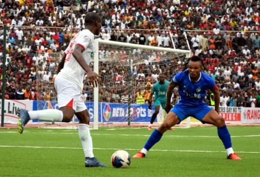

Welcome to the Naija Premier League Hub
Your reliable source of information about Enyimba FC, Remo Stars FC, and Kano Pillars FC. Explore club histories, and upcoming fixtures.
League Facts
- NPFL is Nigeria's top professional league and a major source of talent for national and continental competitions.
- The three featured clubs represent historical (Enyimba), rising (Remo Stars), and passionate fan-base (Kano Pillars) narratives in Nigerian football.